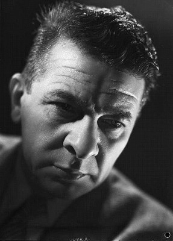
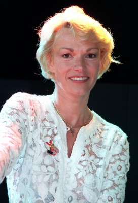
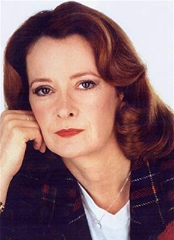

#5984 Der Regenschirmmörder
Alternativ: The Umbrella Coup (Englischer Titel)


 IMDB-Wertung: 6.6 / 10
IMDB-Wertung: 6.6 / 10  Metascore: 0
Metascore: 0 
Der Schauspieler Gregoire Lecomte ist auf der Suche nach einem neuen Job. Er träumt von seinem Erfolg in der Filmbranche, der sich nie erfüllt. Eines Morgens erhält Gregoire die lang ersehnte Chance. Er ist zu einem Vorstellungsgespräch mit einem Produzenten für die Rolle eines gewissenlosen Mörders eingeladen. Es ist für ihn undenkbar, dass er die Rolle nicht bekommen wird. Gregoire irrt sich aber in der Tür und landet im Büro des Mafia-Bosses Barbarini, der eigentlich Moskowitz, einen Auftragskiller, erwartet. Gregoire nimmt den angebotenen Job an – im Glauben es drehe sich um einen Film. Er soll den milliardenschweren Waffenhändler Krampe (auch „Walfisch“ genannt) im Auftrag afrikanischer Politiker auf einer Party in St. Tropez ermorden. Mit der Tatwaffe ergibt sich auch der Titel des Filmes. Gregoire soll ihn nämlich mit einem umgebauten Regenschirm beseitigen.
kann gelöscht werden - doppelt
Jahr: 1980
Dauer: 94 Minuten
FSK: 12
Land: Frankreich Studio: UFATonspuren:
Untertitel: Deutsch,
Auflösung: 720p (1206x720) Größe: 2805 MB
Genre: Komödie, Krimi
Regisseur: Gérard Oury
Drehbuch: Peer Klehmet
Soundtrack:
Darsteller:
 Pierre Richard als Grégoire Lecomte
Pierre Richard als Grégoire Lecomte- Gordon Mitchell als Moskovitz, le tueur
 Gérard Jugnot als Frédo
Gérard Jugnot als Frédo Gert Fröbe als Otto Krampe, dit La Baleine
Gert Fröbe als Otto Krampe, dit La Baleine-  Robert Dalban als Le régisseur du café-théâtre
-  Brigitte Lahaie als Une fille dans la piscine , uncredited
- Valérie Mairesse als Sylvette, alias Bunny
- Christine Murillo als Josyane Leblanc
- Maurice Risch als Le producteur de Paris
-  Dominique Lavanant als Mireille
- Axelle Abbadie als Juliette, la fleuriste
- Yaseen Khan als Radj Kahn
- Didier Sauvegrain als Stanislas Lefort, dit Constantin Patakis, alias Pierre Juvet, dit 'La Folle'
- Mike Marshall als Le docteur
 Roger Carel als Salvatore Bozzoni
Roger Carel als Salvatore Bozzoni- Vittorio Caprioli als Don Barberini
- Patrick Lecocq als Le journaliste télé
- Béatrice Avoine als
- Tiberio Murgia als Lorenzo
- Rachel Cathoud als
- Jean-Jacques Moreau als L'acteur du café-théâtre
- Léon Zitrone als Le commentateur de la soirée
- Erick Desmarestz als
- Jérôme Keen als
- Georges Anderson als
- Philippe Lamendin als
- Philippe Bruneau als Didier
- Catherine Lecocq als
- Michel Carnoy als
- Jacques Maury als Le portier du Byblos
- André Chazel als
- Annick Roux als
- Marjorie Godin als
- Pascal Sablier als
- Suzy Gossen als
- Dominique Virton als Le metteur en scène
- Micheline Kahn als
- Umban U'kset als La victime de Krampe
- Marie-Pierre Casey als La pervenche
- Béatrice Halimi als
- Daniel Breton als
- Gérard Moisan als
- Henri Attal als (uncredited
- Maurice Auzel als Gendarme , uncredited
- Herma Vos als (uncredited
Datei: X:\1980\Regenschirmmörder, Der (1980, FSK12, 1206x720).mkv seit 18.04.2017
Festplatte: HD 1980-1986
 Es gibt insgesamt 33 Filme in der Gruppe '1980'
Es gibt insgesamt 33 Filme in der Gruppe '1980'